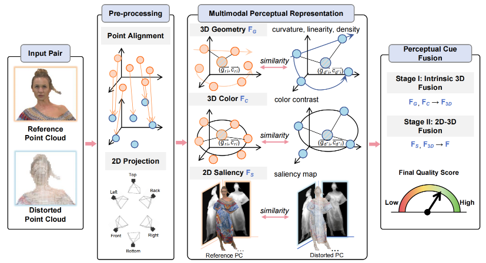

Read the structure
Curvature, linearity, and local point density capture changes in shape and sampling.
IEEE TCSVT Accepted for publication
Multimodal Perceptual Cue Fusion for Full-Reference Point Cloud Quality Assessment
Bringing structure, appearance, and visual attention together — without MOS-supervised training.
1 School of Electronic Science and Engineering,
Nanjing University
2 School of Information Science and Technology,
Hangzhou Normal University
MOSAIC treats full-reference point cloud quality assessment as a multimodal perceptual inference problem, motivated by David Marr’s three-level account of vision.
It compares local 3D structure, RGB appearance, and projected 2D saliency between reference and distorted point clouds. Geometry and color first form an intrinsic 3D fidelity score; saliency-map consistency then adds complementary attention-related evidence.
The metric uses deterministic cues and bounded adaptive weights, without MOS-supervised training or regression-based score integration.
Method
Compare intrinsic 3D fidelity first.
Then bring in projected visual attention.

Curvature, linearity, and local point density capture changes in shape and sampling.
Local RGB residuals describe chromatic contrast in matched point neighborhoods.
Saliency-map SSIM is averaged across six orthogonal views as a complementary fidelity cue.
Bounded sigmoid-based weights fuse geometry and color, then integrate saliency consistency.
Saliency-map consistency is a separate cue, rather than a spatial weight for pooling local 3D distortions. Read the method in the paper.
Evaluation
Best average PLCC, SROCC, and RMSE among the evaluated training-free metrics with results on all five datasets.
PLCC / SROCC
Best among evaluated training-free metricsPLCC / SROCC
Best among evaluated training-free metrics| Dataset | PLCC | SROCC | RMSE | Among evaluated training-free metrics |
|---|---|---|---|---|
| SJTU | 0.912 | 0.898 | 0.994 | Second-best RMSE |
| WPC | 0.844 | 0.834 | 12.292 | Best on all three metrics |
| ICIP | 0.965 | 0.955 | 0.297 | Competitive |
| LS-PCQA | 0.622 | 0.598 | 0.652 | Best on all three metrics |
| MJ-PCCD | 0.831 | 0.755 | 0.651 | Second-best on all three metrics |
Higher PLCC/SROCC and lower RMSE indicate better performance. RMSE uses each dataset’s subjective-score scale and is not directly comparable across datasets.
A selection from the paper’s training-free comparison; the complete comparison is in Table II.
| Method | WPC PLCC | WPC SROCC | WPC RMSE | LS-PCQA PLCC | LS-PCQA SROCC | LS-PCQA RMSE |
|---|---|---|---|---|---|---|
| PCQM | 0.750 | 0.743 | 15.164 | 0.404 | 0.362 | 0.761 |
| GraphSIM | 0.687 | 0.678 | 16.649 | 0.252 | 0.243 | 0.805 |
| PQI | 0.813 | 0.808 | 13.364 | 0.437 | 0.379 | 0.748 |
| TCDM | 0.806 | 0.804 | 13.557 | 0.335 | 0.325 | 0.784 |
| PHM | 0.838 | 0.833 | 12.510 | 0.546 | 0.500 | 0.697 |
| MOSAIC | 0.844 | 0.834 | 12.292 | 0.622 | 0.598 | 0.652 |
The quality metric is training-free. For benchmark evaluation, predicted scores are mapped to MOS using the paper’s five-parameter logistic fitting procedure. Results here follow that reported protocol.
A closer look
The ablation separates the contribution of multimodal cues from the contribution of two-stage fusion.
| Fusion scheme | WPC PLCC / SROCC | LS-PCQA PLCC / SROCC |
|---|---|---|
| Only 3D · adaptive | 0.793 / 0.775 | 0.523 / 0.493 |
| One-stage · uniform | 0.835 / 0.823 | 0.564 / 0.533 |
| One-stage · adaptive | 0.836 / 0.825 | 0.586 / 0.560 |
| Two-stage · uniform | 0.844 / 0.833 | 0.592 / 0.566 |
| Two-stage · adaptive | 0.844 / 0.834 | 0.622 / 0.598 |
“Only 3D” includes geometry and color. The final two-stage adaptive scheme has the best or tied-best results on both datasets across the three reported criteria.
Citation & resources
Accepted for publication in IEEE Transactions on Circuits and Systems for Video Technology.